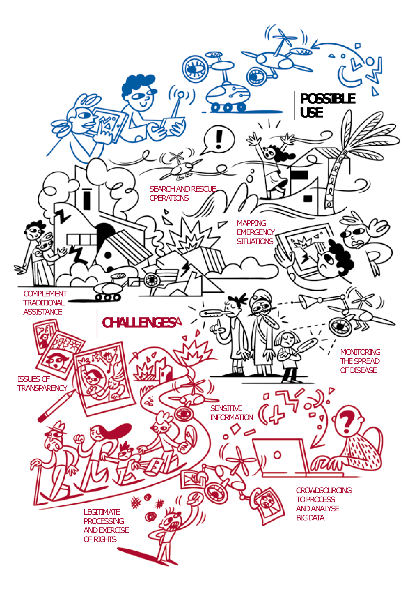

2 Deciding on an approach

Source: ICRC
There are two approaches to making sites maps presented in this guide. The main differerence between the two is in how aerial imagery is obtained:
Using high-resolution satellite imagery.
Using drones to capture aerial images of the site.
Each of these approaches have pros and cons and it is important to evaluate each approach against the following criteria before assessing which approach to take in your context:
2.0.1 Information needs
It is important to be clear on what images you want to collect and for which specific purpose. Consider whether you only need an image/orthomosaic or a Digital Elevation Model, 3D model, NDVI index etc. as this will affect your flight plan. Think about whether you have any applications outside of site mapping such as drainage analysis, slope analysis, landslide risk analysis, vegetation cover analysis etc. Consider also what area needs to be covered, bearing in mind that larger areas require longer flight times, more storage etc.
You should not be flying the drone above as many areas as possible to collect as many images as possible and then decide what to do with them. The data collection must be adequate, relevant and not excessive in relation to the purpose (only the needed data is collected).
2.0.2 Conflict and Data Sensitivity
Due to protection risks, humanitarian use of drones in conflict settings is strongly discouraged. The term “dual-use technology” is commonly used to describe a technology with both civilian and military applications. With the rise of the use of drones for military use, there is a risk that the use of drones for humanitarian purposes in sites may be perceived as a security threat by the site population or cause trauma due to an association of drones with their military uses. In conflict settings armed actors or authorities are likely to perceive the flying of drones as both a security and informational risk. This may mean that importation of equipment or flight approvals are not likely to be granted, or that their use in a site risk being perceived as a security threat. Your flight area must be specified prior to commencing the use of the drones. If unsure about your area of interest, please contact DOE for further guidance.
There are key considerations to take into account when collecting, processing and sharing any type of data. These considerations determine the degree of sensitivity applied throughout the data life cycle and include:
the potential to harm data subjects and others;
the potential to discriminate;
the potential to harm IOM staff and individuals representing authorized third parties.
In addition to the data risks and concerns outlined in the IOM Data Protection Manual, there are additional specific concerns and risks associated with the use of drones.1
Once your flight area is identified, a risk-benefit assessment should be conducted prior to using drones. The risk-benefit assessment will evaluate the risks and benefits associated with collecting and processing drone captured imagery and determine whether flying a drone to collect aerial imagery data is the best approach for your context.
2.0.3 Data security/responsibility
The use of drones to capture aerial image for site mapping does not require the collection of personal data. Individuals must not be identifiable from captured images. Ensure that the flight (altitude, angle etc.) eliminates or reduces as much as possible the likelihood that imagery captured may directly or indirectly identify an individual. If, by mistake, you collect images in which people can be identified, you should immidiately delete them. However, if the image taken must really be used, you can either crop the image or blur the faces of people who could be identified. While collecting the data or shortly thereafter, you should check whether some of the data collected is particularly sensitive and should be deleted or otherwise made unrecognizable in the image (e.g. a group of individuals that could be identified as part of a specific group, image of illegal crops or settlement).
2.0.4 Regulatory environment
It is important to fully understand the national and local-level laws, procedures and norms related to the use of UAVs as it can vary significantly between contexts. The regulatory enviroonment can refer to import procedures and restrictions; limitations on size and types on drones; pilot qualification requirements; and geographic limitations for UAV flight.
The Global Drone Regulations Database keeps an updated collection of country-specifc relations, and can be used to understand the sources of legal information, relevant contact information and regulations on operating rules, licensing and approval procedures. 2
2.0.5 Organizational requirements
During the planning phase, it is important that IOM stuff reach out to IOM’s Office of Legal Affairs (LEG) leg@iom.int They provide legal an compliance guidance as well as the latest version of the Drone usage checklist and Risk-benefit analysis template.
Many organization have internal rules and guidance governing the use of technologies such as Drones. Donors may also have their own rules around their uses and the use of data resulting from the exercise. During the planning stage its important to contact the relevant organisation focal-point to ensure compliance with these rules.
DroneRegulations.info launched by the UAVatiors network in 2014, is a database of national-level UAV regulations.↩︎